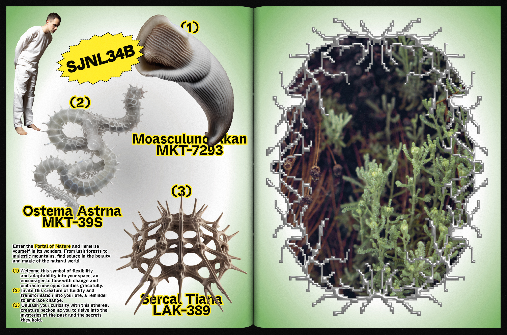
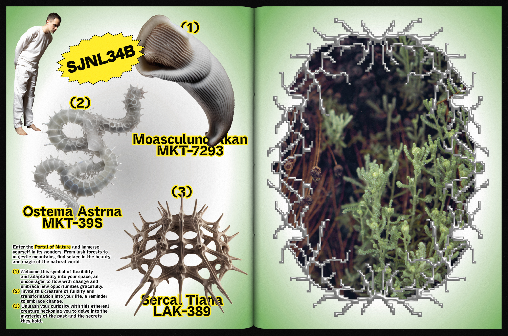

[IT] La nebbia è fitta grigia e acida che a respirarla ti senti bruciare la gola come se mille minuscole lame ti tagliassero da dentro. Se ti trovassi per strada allora è sicuro che non vedresti niente perché la mescolanza con agenti inquinanti la rende densa come un muro di cemento; sentiresti solo il suono del tuo respiro e quello cadenzato dei tuoi stivali che affondano nell’acqua che da circa dieci anni ormai sta sommergendo qualsiasi spazio terrestre. Anche quando c’è il sole è difficile respirare, le temperature sono altissime e nei mesi estivi, tutto ciò che prima era una gigantesca pozza d’acqua si trasforma in deserto con polveri sottilissime d’ogni genere che ti si attaccano ai denti, alla lingua alla gola seccandola come se mandassi giù un mucchietto di sabbia. Se ti trovassi per strada allora è sicuro che non vedresti niente perché la luce è troppo forte irradiata dai mille specchi delle architetture, dai vestiti della gente, fatti riflettenti per non accumulare calore; sentiresti solo il suono cadenzato dei tuoi pressi con suola metallica perché la gomma delle scarpe che tanto si usava in tutte le sue declinazioni ora non diveniva altro che una poltiglia inconsistente fusa al palmo dei piedi.
Non pioveva più, scendevano solo cristalli di ghiaccio, anche in piena estate, e l’aria diveniva gelida così che ogni parola e ogni respiro si congelavano appena aprivi la bocca trasformandosi anche essi in piccoli ghiacci che subito cadevano taglienti verso il suolo che brillava come fosse ricoperto di diamanti. Se ti trovassi per strada allora è sicuro che non vedresti niente perché i tuoi occhi sarebbero coperti da delle grosse membrane per proteggerli dai cristalli taglienti così duri da spaccare anche il vetro più forte; sentiresti solo il suolo cadenzato dei tuoi passi che, a fatica, si trascina uno dopo l’altro producendo tra i cristalli come un suono stellare che certo non farebbe pensare ad un paesaggio così rigido e ostile.
E delle case cosa ne era? In un modo in cui il senso della vista, e forse direi anche della vita, aveva perso qualsiasi importanza non potevano che esserci case con mobili bianchi, piatti bianchi, posate e bicchieri bianchi, vestiti bianchi, lenzuola bianche, tende bianche, cibi bianchi, acqua bianca come il latte, pensieri bianchi; perfino le piante e i fiori avevano perso i loro colori adattandosi in modo camaleontico alle case che abitavano che rispecchiavano, d’altronde, la triste vita terreste degli abitanti umani. Se ti trovassi in una casa allora è sicuro che rimarresti colpito da un piccolo dettaglio: sul tavolo, sul mobile d’ingresso, sullo zerbino o nella cassetta della posta avresti trovato sicuramente una rivista di poche pagine, sedici, di cui due erano prima e quarta di copertina, rilegata a punti metallico niente di più se non si fosse trattato di un’esplosione di colori. Si potrebbe dire che quella rivista dai mille e più colori attirava le persone come una cafona insegna a neon, fluorescente, in un quartiere notturno, attrae insetti di ogni genere. Era un pugno in un occhio, un tuono a ciel sereno, il rombo di un’aereo, il fischio della vento, un treno che passa velocissimo, era il manifesto del mondo nuovo: la sostanza dei sogni.
Mensilmente arrivava accompagnata da un suono di campanello lungo e monotono. Allora sapevi che quel giorno si festeggiava, si mangiava, si beveva e si sognava il nuovo mondo perché quella rivista rappresentava la speranza di trasformare I propri sogni più belli in realtà.


 

2024 Deviante
[IT] La nebbia è fitta grigia e acida che a respirarla ti senti bruciare la gola come se mille minuscole lame ti tagliassero da dentro. Se ti trovassi per strada allora è sicuro che non vedresti niente perché la mescolanza con agenti inquinanti la rende densa come un muro di cemento; sentiresti solo il suono del tuo respiro e quello cadenzato dei tuoi stivali che affondano nell’acqua che da circa dieci anni ormai sta sommergendo qualsiasi spazio terrestre. Anche quando c’è il sole è difficile respirare, le temperature sono altissime e nei mesi estivi, tutto ciò che prima era una gigantesca pozza d’acqua si trasforma in deserto con polveri sottilissime d’ogni genere che ti si attaccano ai denti, alla lingua alla gola seccandola come se mandassi giù un mucchietto di sabbia. Se ti trovassi per strada allora è sicuro che non vedresti niente perché la luce è troppo forte irradiata dai mille specchi delle architetture, dai vestiti della gente, fatti riflettenti per non accumulare calore; sentiresti solo il suono cadenzato dei tuoi pressi con suola metallica perché la gomma delle scarpe che tanto si usava in tutte le sue declinazioni ora non diveniva altro che una poltiglia inconsistente fusa al palmo dei piedi. Non pioveva più, scendevano solo cristalli di ghiaccio, anche in piena estate, e l’aria diveniva gelida così che ogni parola e ogni respiro si congelavano appena aprivi la bocca trasformandosi anche essi in piccoli ghiacci che subito cadevano taglienti verso il suolo che brillava come fosse ricoperto di diamanti. Se ti trovassi per strada allora è sicuro che non vedresti niente perché i tuoi occhi sarebbero coperti da delle grosse membrane per proteggerli dai cristalli taglienti così duri da spaccare anche il vetro più forte; sentiresti solo il suolo cadenzato dei tuoi passi che, a fatica, si trascina uno dopo l’altro producendo tra i cristalli come un suono stellare che certo non farebbe pensare ad un paesaggio così rigido e ostile. E delle case cosa ne era? In un modo in cui il senso della vista, e forse direi anche della vita, aveva perso qualsiasi importanza non potevano che esserci case con mobili bianchi, piatti bianchi, posate e bicchieri bianchi, vestiti bianchi, lenzuola bianche, tende bianche, cibi bianchi, acqua bianca come il latte, pensieri bianchi; perfino le piante e i fiori avevano perso i loro colori adattandosi in modo camaleontico alle case che abitavano che rispecchiavano, d’altronde, la triste vita terreste degli abitanti umani. Se ti trovassi in una casa allora è sicuro che rimarresti colpito da un piccolo dettaglio: sul tavolo, sul mobile d’ingresso, sullo zerbino o nella cassetta della posta avresti trovato sicuramente una rivista di poche pagine, sedici, di cui due erano prima e quarta di copertina, rilegata a punti metallico niente di più se non si fosse trattato di un’esplosione di colori. Si potrebbe dire che quella rivista dai mille e più colori attirava le persone come una cafona insegna a neon, fluorescente, in un quartiere notturno, attrae insetti di ogni genere. Era un pugno in un occhio, un tuono a ciel sereno, il rombo di un’aereo, il fischio della vento, un treno che passa velocissimo, era il manifesto del mondo nuovo: la sostanza dei sogni. Mensilmente arrivava accompagnata da un suono di campanello lungo e monotono. Allora sapevi che quel giorno si festeggiava, si mangiava, si beveva e si sognava il nuovo mondo perché quella rivista rappresentava la speranza di trasformare I propri sogni più belli in realtà.